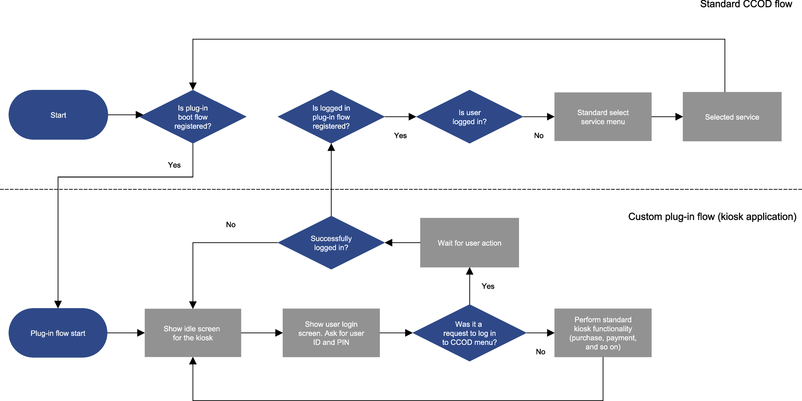

- CashComplete™ On-Device Software Development Kit Guide
- User license agreement for PayComplete software
- CashComplete™ On-Device and SDK compatibility matrix
- SDK documentation
- Getting started with JDK
- Getting started with Eclipse
- Inside the SDK
- SDK troubleshooting
- SDK examples — prerequisites
- SDK 3.0.0 - configuration handling
- SDK 2.0.0
- Icons for services
- Purchases, payments, and kiosks
- Revision history
Kiosk application — workflow
You can extend the standard functionality and add new user flows to CashComplete™ On-Device by creating a number of plug-ins. The added user flows are then available from the CashComplete™ On-Device user interface.
|  |
A standard CCOD flow (for more information, see section CashComplete™ On-Device and plug-in flowchart) and a custom plug-in flow for a kiosk application
This workflow describes how you build a kiosk, such as a train ticket machine or a vending machine, where you take full control of the machine, add your own GUI, and only use CashComplete™ On-Device as a middle-ware to handle the hardware and facilitate the purchase/payment.
When you customize the GUI (hide the standard CashComplete™ On-Device user interface), you can choose to develop that GUI with whatever technique you are comfortable with, such as HTML, Angular, or React.
The examples in this workflow use the standard Swing framework. Although it might not be optimal for building a modern GUI for a kiosk, it is native java and is easier to describe. You can replace it with whatever you want to use.
Follow these instructions to complete the kiosk application:
Three main classes
In any plugin you write, you need at least two classes. For kiosk applications, you also need a class for managing the GUI. In our example:
IOJPlugin
IOJFlow
JFrame (used for managing the UI)
The flow is registered as a boot flow because the flow should start when the machine starts. If someone has logged in to the standard CashComplete™ On-Device flows and logs out, you want to end up in the plugin flow again. This is how a boot flow behaves.
public class SimpleKiosk implements IOJPlugin
{
@Override
public void initialize( IOJRegistrator registrator )
{
try
{
registrator.registerBootFlow( new SimpleKioskFlow() );
} catch ( Exception e ) {}
}
}
public class SimpleKioskFlow implements IOJFlow
{
@Override
public void run( IOJFlowSession session )
{
}
}
public class SimpleKioskFrame extends JFrame
{
private static final long serialVersionUID = 1L;
public SimpleKioskFrame( final IOJFlowSession session )
{
super( "Simple Kiosk" );
setUndecorated( true );
setDefaultCloseOperation( EXIT_ON_CLOSE );
setExtendedState( MAXIMIZED_BOTH );
}
}See also
User interface management
This example describes how to replace the user interface. Whenever the flow is started, the new GUI should be displayed hiding the CashComplete™ On-Device GUI.
Note
The order is important to make sure Windows desktop doesn't appear between the calls.
The example ensures that if/when the flow’s run method exits, it switches back to the CashComplete™ On-Device flow. This is necessary as a precaution in case the GUI is hidden. If no fallback exists, this would dead-lock the machine. The fallback is added in a 'finally' block.
public class SimpleKioskFlow implements IOJFlow
{
@Override
public void run( IOJFlowSession session )
{
SimpleKioskFrame gui = new SimpleKioskFrame( session );
try
{
gui.setVisible( true );
session.getUIManager().setSystemWindowsVisible( false );
// ... implement the kiosk flow
}
finally
{
session.getUIManager().setSystemWindowsVisible( true );
gui.dispose();
}
}
}See also
Model View Controller
Model View Controller (MVC) is one of the traditional architectural patterns for software development. It's a good principle to use when implementing an SDK plugin using your own GUI. You automatically end up with at least two threads in your plugin (at least, that is the case if the GUI is done using Swing):
An SDK flow thread that calls the run() method of your flow
Event Dispatch Thread of Swing
You also get a third thread, called SDK event thread, that calls all event listeners you have registered.
This can easily get complicated. The MVC pattern makes it less complicated.
You should try to implement the entire flow (Control) of your application in the SDK flow thread in the context of the run()-method. You should keep the GUI (View) in the JFrame class and the event dispatch thread.
Passing control between these two threads is simple using one construct from the SDK and one from Swing.
To pass a GUI event over from the Event Dispatch Thread to the SDK flow thread, you can use the concept of key-strokes in the SDK (IOJUIManager). The GUI class can use the method injectKey() to post a key-event, and the SDK flow thread calls waitForKey() to block until a certain key is pressed. This becomes an asynchronous notification, which is normally what you want when passing a notification from the GUI to the Controller to prevent the GUI from freezing.
public class SimpleKioskFlow implements IOJFlow
{
@Override
public void run( IOJFlowSession session )
{
SimpleKioskFrame gui = new SimpleKioskFrame( session );
try
{
gui.setVisible( true );
session.getUIManager().setSystemWindowsVisible( false );
while ( true )
{
OJKey key = session.getUIManager().waitForKey( true, 0 );
// ... do something based on the key you got
}
}
finally
{
session.getUIManager().setSystemWindowsVisible( true );
gui.dispose();
}
}
}
public class SimpleKioskFrame extends JFrame
{
private JButton actionButton = new JButton( "Do something" );
public SimpleKioskFrame( final IOJFlowSession session )
{
// ...
actionButton.addActionListener( ( ae ) ->
{
session.getUIManager().injectKey( OJKey.KEY_F1 );
} );
}
}You go the other way, from the SDK Flow Thread (the Control thread) to the Event Dispatcher Thread (the View thread) with a Swing helper class called SwingUtilities. You can use either the asynchronous SwingUtilities.invokeLater() or the synchronous SwingUtilities.invokeAndWait().
For more information, see:
SDK flow thread:
gui.changeButtonName( "I was pressed" );
In SimpleKioskFrame:
public void changeButtonName( final String name )
{
SwingUtilities.invokeLater( () ->
{
actionButton.setText( name );
} );
}See also
How to switch over to CashComplete™ On-Device
The example shows how to make your own application and your own GUI to control the machine, using CashComplete™ On-Device only as a middleware to control the hardware and to facilitate things like purchases, payments, and receipts.
This is mainly for the end customer flows and screens, such as the vending machine user interface or any other kiosk purpose. A kiosk also needs technical administration menus to refill cash dispensers, empty cash acceptance boxes, do cash inventory, print content reports, handle errors, and so on. This is where you can really leverage the benefit of having CashComplete™ On-Device. You can write your application to completely focus on it’s core feature (vending products) and use CashComplete™ On-Device for all other functions. To do so, you need a way to switch over to the CashComplete™ On-Device GUI.
Switching over is easily done by returning from the run() method of your SDK flow. Before doing that, you need to make sure that an authorized CashComplete™ On-Device user has successfully logged. If no authorized CashComplete™ On-Device user is logged in, the machine could end up in a limbo state.
You need to figure out how the log-in procedure is initiated in your GUI. In our SimpleKiosk example, you double-click the header (the PayComplete® logo).
Just like in the Model View Controller example, you inject a key that represents the attempt to log in to the technical menu, for example, OJKey.KEY_CANCEL.
For more information, see Model View Controller.
private class SimpleKioskFlow implements IOJFlow
{
@Override
public void run( IOJFlowSession session )
{
SimpleKioskFrame gui = new SimpleKioskFrame( session );
try
{
gui.setVisible( true );
session.getUIManager().setSystemWindowsVisible( false );
while ( true )
{
OJKey key = session.getUIManager().waitForKey( true, 0 );
if ( key == OJKey.KEY_CANCEL )
{
if ( loginUser( session ) )
{
return;
}
}
// ... Handle other keys and functions...
}
}
finally
{
session.getUIManager().setSystemWindowsVisible( true );
gui.dispose();
}
}
}This example calls a private helper method called loginUser(). This private helper method switches over to the CashComplete™ On-Device GUI and shows a log-in screen. It attempts to log in a standard user from CashComplete™ On-Device’s own user database. If it succeeds, it returns true. If it fails, it returns false.
This is the method as implemented in the SimpleKiosk example. The example is generic so you can use it for any kiosk you implement.
private boolean loginUser( IOJFlowSession session )
{
// The login procedure uses the standard CCOD GUI, so let's show that here
session.getUIManager().setSystemWindowsVisible( true );
session.getUserManager().beginLoginProcedure();
try
{
String id = session.getUIManager().inputNumericText(
"Enter ID", "", false, 15 );
if ( id != null )
{
String pin = session.getUIManager().inputNumericText(
"Enter PIN", "", true, 15 );
if ( pin != null )
{
try
{
session.getUserManager().loginUser( id, pin );
}
catch ( OJIncorrectPasswordException | OJUserNotFoundException e )
{
HashMap<IOJUIManager.OJKey, String> tOkKey =
new HashMap<IOJUIManager.OJKey, String>();
tOkKey.put( IOJUIManager.OJKey.KEY_OK, "OK" );
session.getUIManager().showTextScreen(
"Incorrect user or pin", "", null, tOkKey );
session.getUIManager().waitForKey( true, 5000 );
}
}
}
if ( session.getUserManager().getCurrentUser() == null )
{
session.getUIManager().setSystemWindowsVisible( false );
return false;
}
return true;
}
finally
{
session.getUserManager().endLoginProcedure();
}
}User
A purchase, deposit, or dispense requires that a user is logged in. It's sufficient that the default anonymous user is logged in, which is probably what you want for a kiosk. All you need to do is surround your purchase procedure with these two methods:
session.getUserManager().loginDefaultUser();
session.getUserManager().logout();
See also
Kiosk app
You now have all the bits and pieces to develop your own kiosk app. Just populate the SimpleKioskFrame with buttons for the different products, let the buttons send different OJKey values to the flow thread, which in turn performs the purchase.
For information on a simple purchase procedure, see Simple purchase procedure.
You can find the full example (SimpleKiosk) in the Examples folder of the SDK.